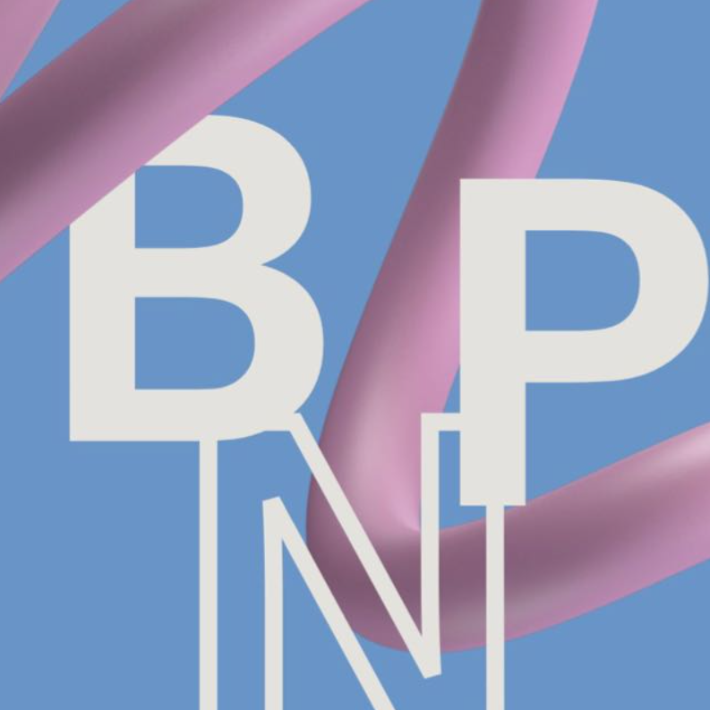

O grupo é formado pela Bruna P.Nesi,Danieli H. Ferreira, Raissa F.G. Batista e Stéfany G.D. dos Santos. O grupo dos Objetivos de Desenvolvimento Sustentável (ODS) escolhido foi o Consumo e Produção Sustentáveis com foco em ações globais e locais, como alcançar o uso eficiente de recursos naturais, reduzir o desperdício de roupas, manejar resíduos químicos de maneira responsável. A Descrição da ação é perguntar como podemos melhorar nossa relação com as roupas? Criação de um site ou aplicativo com informações sobre cuidados básicos. Economia circular: onde posso doar minhas roupas? parte onde direciona as pessoas para o local mais próximo de doação e qual a finalidade? Onde posso comprar? Como posso fazer parte desse movimento? Local de informação para consumo, onde encontrar brechós separados por valores e se tem ou não função social.
Mais informações 